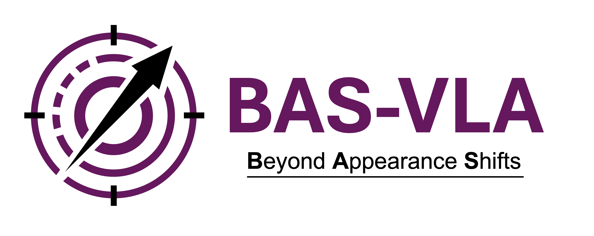
Beyond Appearance Shifts: Task-Semantic Action Calibration for VLA Models
Website: anonymous-2026.github.io/BAS-VLA
Abstract
Vision-language-action (VLA) models have achieved strong performance in embodied manipulation, but still lack a clear mechanism to balance behavioral stability with task-semantic sensitivity. We identify two complementary failure modes. Under task-preserving changes, where task semantics remain unchanged but scene appearance varies (e.g., style, illumination, clutter, or paraphrasing), policies often exhibit unnecessary action drift. Conversely, under semantic-breaking changes, where key task semantics such as the target object or constraint are altered, policies frequently fail to produce sufficiently distinct behaviors and instead follow the original trajectory. To address this gap, we propose BAS-VLA, a task-semantic action calibration framework built on top of a frozen base VLA. BAS-VLA adopts a breaking-centered calibration core as the default path, and introduces a selective evidence-gated preserving auxiliary that activates only when nuisance variation is detected while task semantics remain consistent. On the OpenPI-pi0.5 / LIBERO-Object Milk-Swap benchmark, BAS-VLA maintains high success on clean (98.0%) and semantics-preserving conditions (97.5%), while reducing clean-criterion success to 0.0% under deliberate target-object swaps, demonstrating strong stale-task suppression and task-semantic separation. On validated style-preserving shifts, it improves success from 42% to 70% without degrading clean performance. These results highlight that reliable VLA behavior requires moving beyond appearance robustness toward explicit task-semantic action calibration.
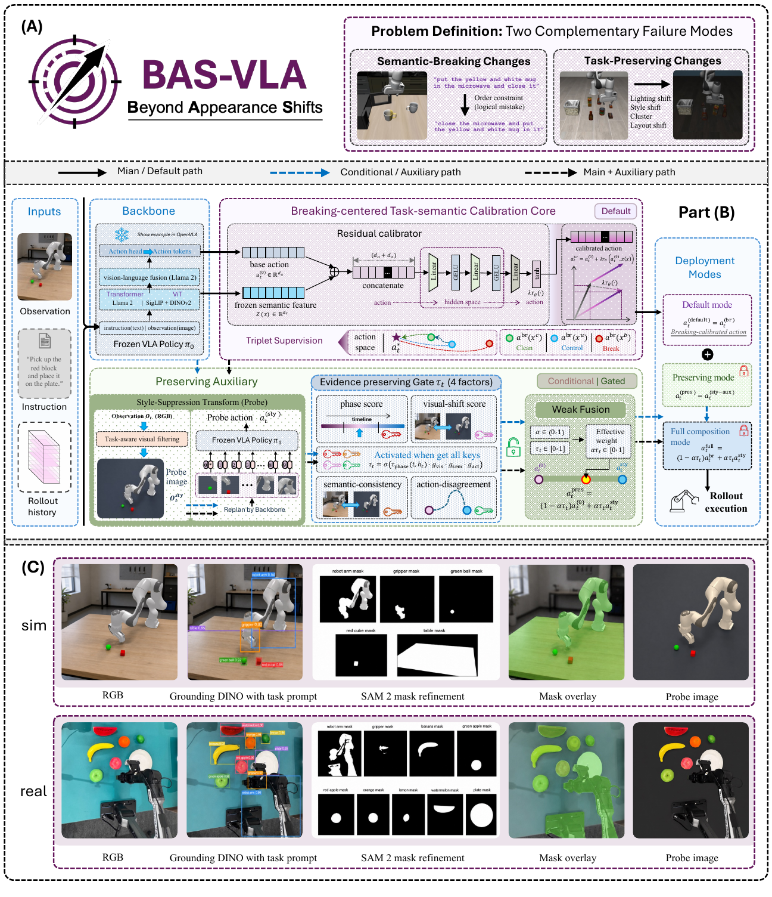
Overview
BAS-VLA frames reliability as an action-level calibration problem. Task-preserving interventions should remain in the same action basin, while semantic-breaking interventions should push the policy away from the stale clean trajectory.
- Task-preserving changes: style, illumination, clutter, viewpoint, or wording changes that keep task semantics fixed.
- Semantic-breaking changes: edits to target objects or constraints that require a different behavior.
- Frozen carrier: the base VLA remains fixed; BAS-VLA attaches a lightweight calibration layer at the action output.
Figure 1. BAS-VLA overview. Part (A) summarizes the two intervention types studied in this work: task-preserving changes and semantic-breaking changes. Part (B) shows BAS-VLA as an action-calibration layer over a frozen base VLA. Part (C) illustrates the task-aware visual filtering probe, from RGB input to text-conditioned grounding, SAM 2 mask refinement, merged task-relevant masks, and the resulting probe image.
Motivation
Strong VLA backbones can still fail in opposite ways. Under appearance-only changes, they may drift from an otherwise correct behavior. Under true semantic changes, they may keep executing the original task. BAS-VLA separates these cases by making the calibration target explicit at the action level.
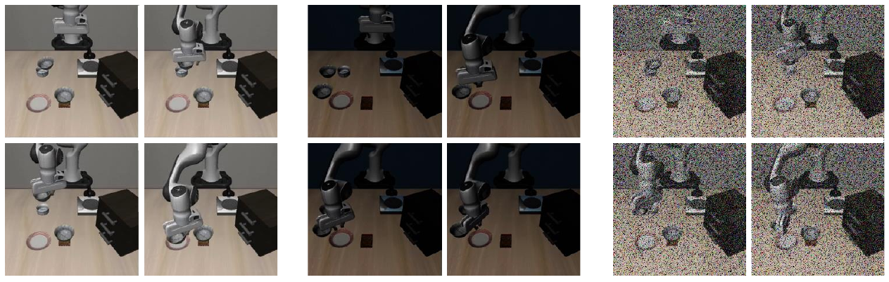
Figure 2. Task-preserving motivation on a single Black-Bowl-to-Plate instruction. The three panels show a clean success, a failure under a darkened illumination shift, and a failure under a semantics-preserving noise perturbation.
Method
Breaking-Centered Core
The default BAS-VLA path adds a small residual calibrator to the frozen base action. Matched clean, preserving-control, and semantic-break triplets train the residual to keep clean/control actions close while pushing breaking edits outside the clean action basin.
Evidence-Gated Preserving Auxiliary
The preserving auxiliary is intentionally selective. It activates only when early rollout phase, frozen visual-feature discrepancy, semantic consistency, and action disagreement jointly indicate nuisance-induced drift rather than a true task change.
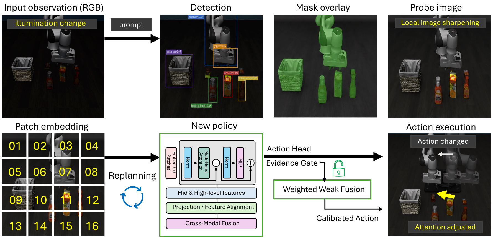
Figure 3. Dark-scene preserving example. The frozen carrier misreads the target under illumination change; the evidence-gated probe path activates and produces a corrected action.
Results
The tables below reproduce the corresponding paper tables in full rather than using shortened web summaries.
| Carrier | Suite | Perturbation | Original success ↑ | Perturbed success ↑ | Δ (pts) |
|---|---|---|---|---|---|
| OpenVLA-OFT | LIBERO-Spatial | Perimeter clutter | 98/100 (98.0%) | 65/100 (65.0%) | -33.0 |
| OpenVLA-OFT | LIBERO-Spatial | Margin noise | 97/100 (97.0%) | 51/100 (51.0%) | -46.0 |
| OpenPI-pi0.5 | LIBERO-Object | Illum. change | 98/100 (98.0%) | 89/100 (89.0%) | -9.0 |
| OpenPI-pi0.5 | LIBERO-Object | Target-object Swap | 197/200 (98.5%) | 68/200 (34.0%) | -64.5 |
| Method | Clean success ↑ | Limited Clean success ↑ | Style-shift success ↑ | Δstyle ↑ |
|---|---|---|---|---|
| Baseline | 194/200 (97.0%) | 108/200 (54.0%) | 84/200 (42.0%) | - |
| BAS-VLA | 195/200 (97.5%) | 108/200 (54.0%) | 140/200 (70.0%) | +28.0 pts |
| Task | Setting | Clean success ↑ | Control success ↑ | Break (clean) ↓ | Ctrl.-Break gap ↑ |
|---|---|---|---|---|---|
| Canonical harder target-object tasks | |||||
| BBQ-Swap | BBQ sauce → ketchup | 180/200 (90.0%) | 185/200 (92.5%) | 0/200 (0.0%) | 92.5 |
| Ketchup-Swap | ketchup → tomato sauce | 176/200 (88.0%) | 184/200 (92.0%) | 0/200 (0.0%) | 92.0 |
| Milk-Swap | milk → orange juice | 196/200 (98.0%) | 195/200 (97.5%) | 0/200 (0.0%) | 97.5 |
| Butter-Swap | butter → cream cheese | 188/200 (94.0%) | 182/200 (91.0%) | 113/200 (56.5%) | 34.5 |
| OJ-Swap | orange juice → milk | 197/200 (98.5%) | 193/200 (96.5%) | 0/200 (0.0%) | 96.5 |
| Stronger interference in the orange-juice → milk setting | |||||
| OJ-Swap | Hard noise | 184/200 (92.0%) | 185/200 (92.5%) | 0/200 (0.0%) | 92.5 |
| OJ-Swap | Clutter+Noise | 192/200 (96.0%) | 183/200 (91.5%) | 0/200 (0.0%) | 91.5 |
| Strategy | Clean success rate ↑ | Control success rate ↑ | Break (clean) ↓ | Ctrl.-Break gap ↑ |
|---|---|---|---|---|
| BAS-VLA | 196/200 (98.0%) | 195/200 (97.5%) | 0/200 (0.0%) | 97.5 |
| SGAC-AC (NeurIPS'25) | 194/200 (97.0%) | 195/200 (97.5%) | 2/200 (1.0%) | 96.5 |
| AAC (CVPR'26) | 196/200 (98.0%) | 195/200 (97.5%) | 2/200 (1.0%) | 96.5 |
| RTC (NeurIPS'25) | 197/200 (98.5%) | 192/200 (96.0%) | 4/200 (2.0%) | 94.0 |
| PCD (ICLR'26) | 176/200 (88.0%) | 179/200 (89.5%) | 6/200 (3.0%) | 86.5 |
| ST4-VLA (ICLR'26) | 189/200 (94.5%) | 190/200 (95.0%) | 45/200 (22.5%) | 72.5 |
| HAMLET (ICLR'26) | 88/200 (44.0%) | 86/200 (43.0%) | 0/200 (0.0%) | 43.0 |
| Task | Method | n (c/ctrl/br) | Clean | Control | Break | Old-target suppr. | New-target first-commit | Sep. score |
|---|---|---|---|---|---|---|---|---|
| T1: group the specified colored block with its target set | ||||||||
| baseline | frozen-policy reference | 16/17/17 | 9/16 (56.3%) | 9/17 (52.9%) | 4/17 (23.5%) | 7/17 (41.2%) | 6/17 (35.3%) | 38.2 |
| BAS-VLA default | breaking-centered deployment | 16/17/17 | 10/16 (62.5%) | 10/17 (58.8%) | 7/17 (41.2%) | 12/17 (70.6%) | 11/17 (64.7%) | 67.6 |
| T2: place the specified fruit onto the plate | ||||||||
| baseline | frozen-policy reference | 16/17/17 | 8/16 (50.0%) | 8/17 (47.1%) | 3/17 (17.6%) | 6/17 (35.3%) | 5/17 (29.4%) | 32.4 |
| BAS-VLA default | breaking-centered deployment | 16/17/17 | 9/16 (56.3%) | 9/17 (52.9%) | 6/17 (35.3%) | 11/17 (64.7%) | 10/17 (58.8%) | 61.8 |
Image Gallery
The project page uses still images only. The gallery below includes figures that are actively referenced by the submitted paper.
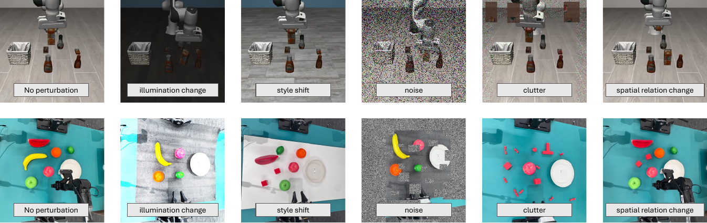
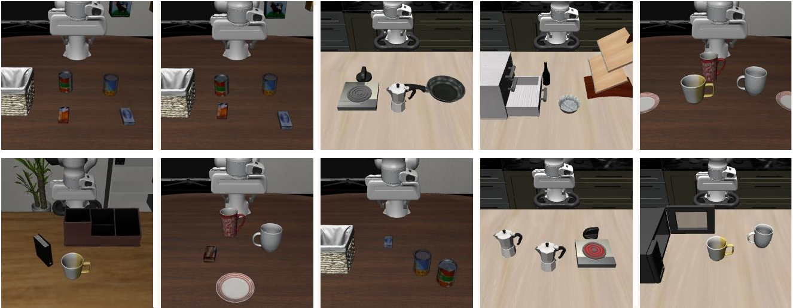
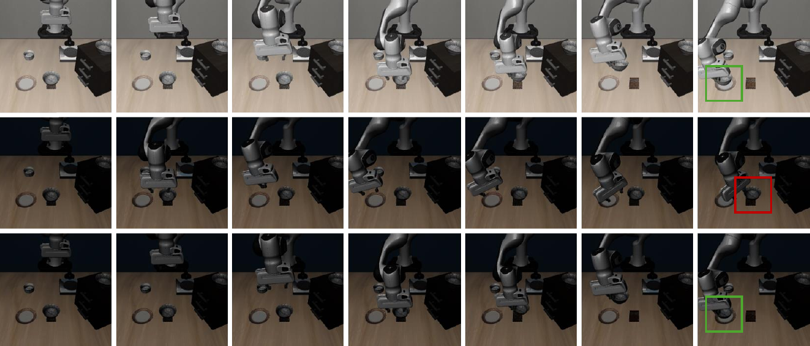
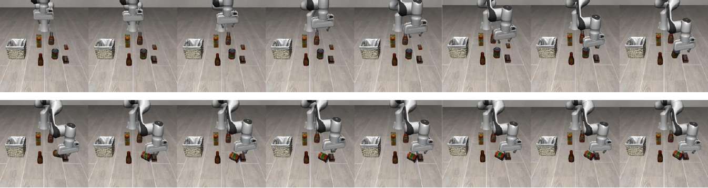
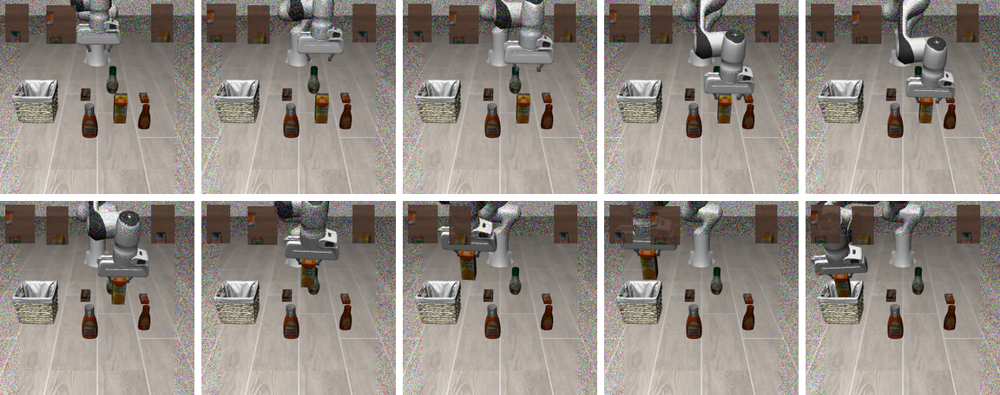
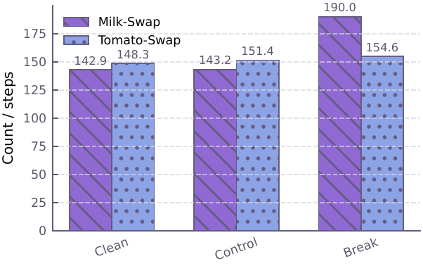
Mean steps.
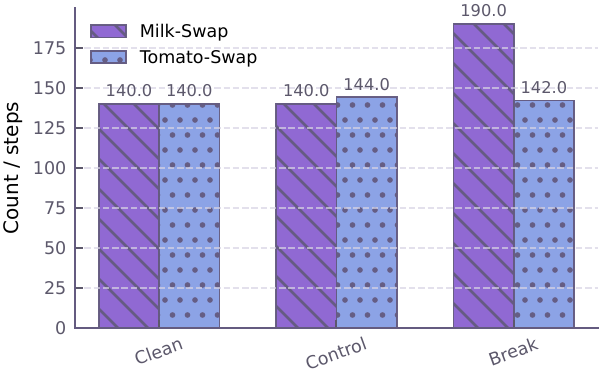
Median steps.
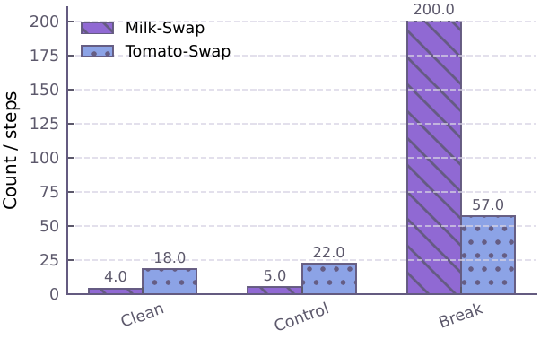
190-step saturation.
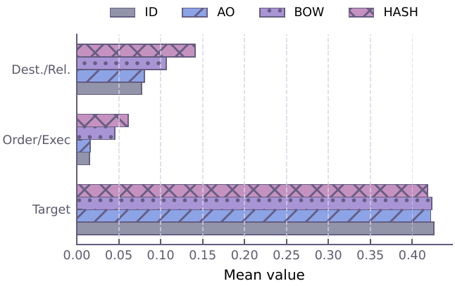
Break-clean by family.
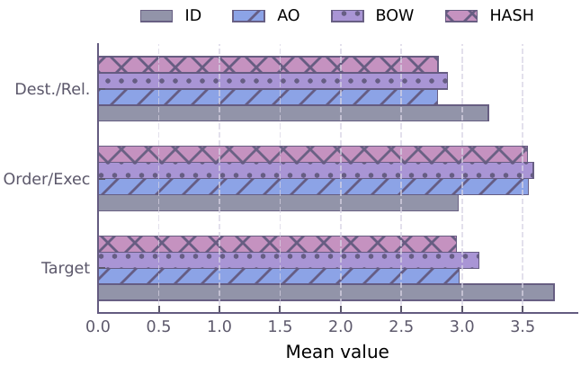
Break-expert by family.
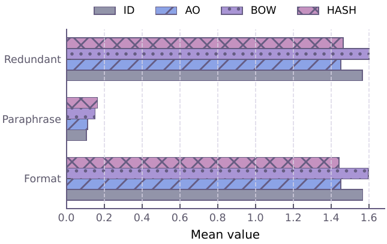
Control invariance by family.
Citation
@inproceedings{anonymous2026basvla,
title = {Beyond Appearance Shifts: Task-Semantic Action Calibration for VLA Models},
author = {Anonymous Author(s)},
booktitle = {Anonymous Submission},
year = {2026}
}